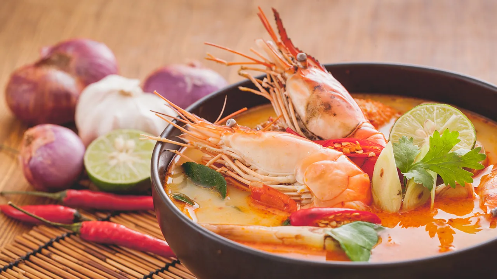
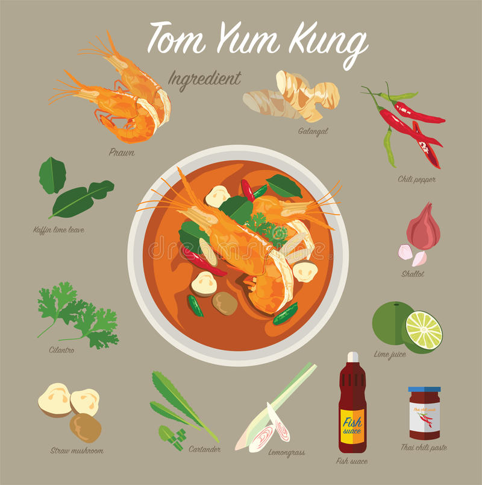
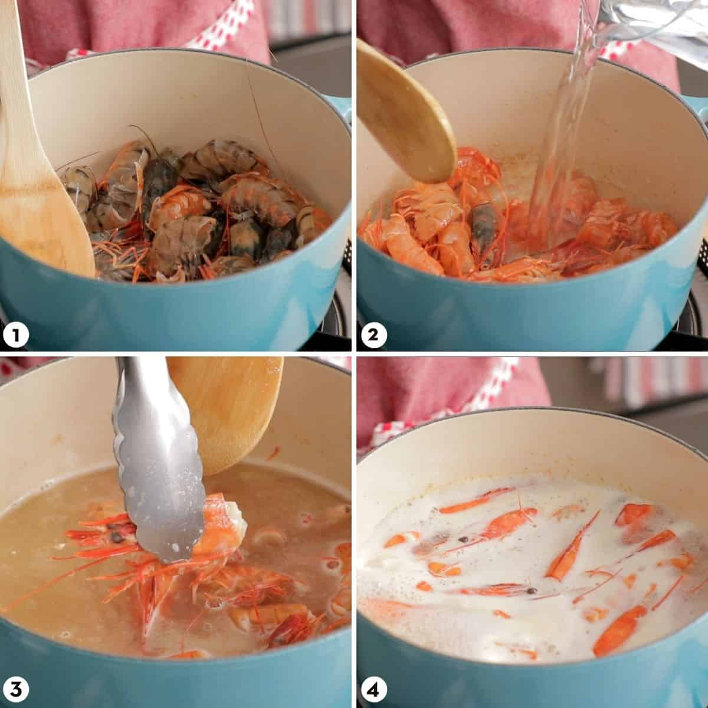
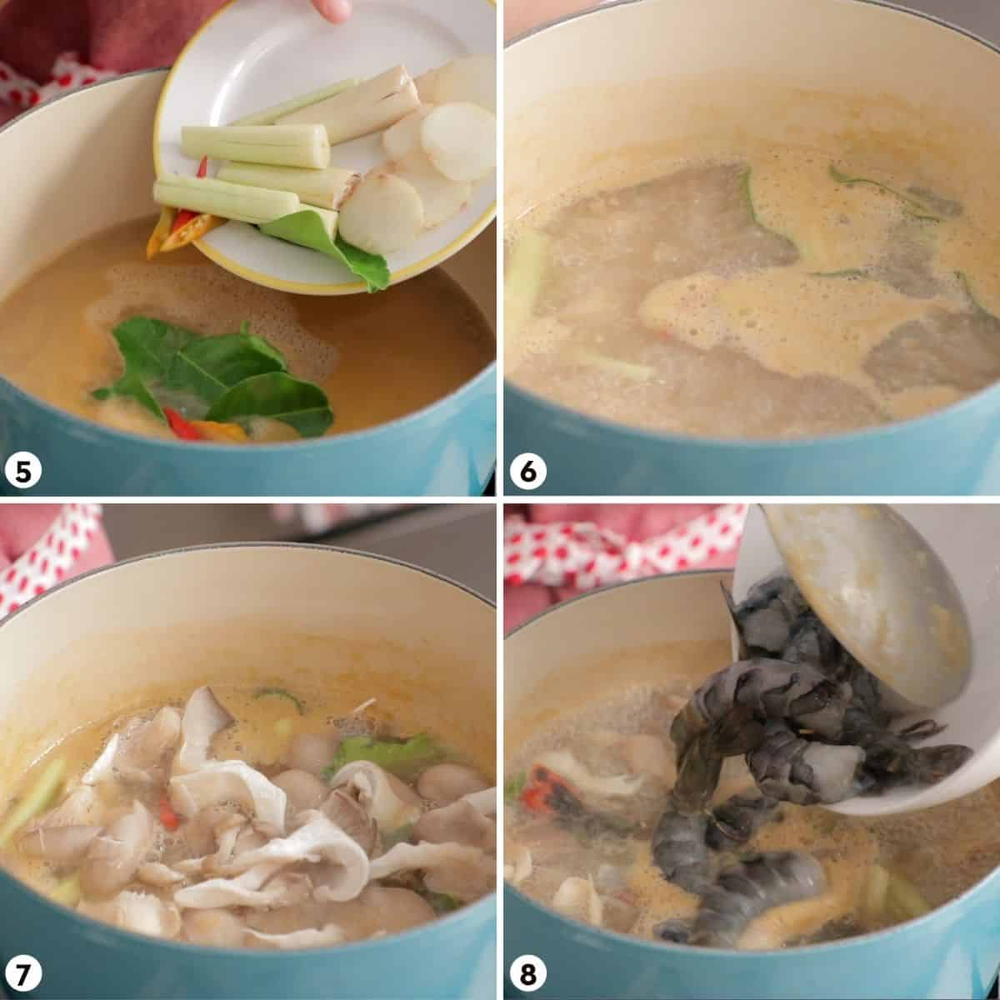

Tom Yum

Tom yum is a type of Thai hot and sour soup where the iconic flavours come from 3 herbs:
- Lemongrass
- Galangal
- Makrut(kaffir)
-
It can be made with any meat or seafood even leftover cooked meats, but the most popular version is
made with shrimp tom yum goong
.There are tons of different versions, and the tom yum flavour is so good
it has been turned into other dishes like tom yum spaghetti, tom yum fried rice.
Ingredients
Here are all the ingredients for tom yum soup (can be substituted):

- Medium to large shrimp
- Chicken stock
- Makrut lime leaves
- Lemongrass
- Galangal
- Thai chilies
- Thai chilli paste/chilijam. Known as nam prik pao in Thai
- Fresh lime juice.
- Fish sauce
- Sugar
- Oyster mushrooms
- Cilantro
How to make Tom Yum Soup
- Make the shrimp stock by sauteing shrimp heads until the bottom of the pot starts collecting browned bits.
- Pour water inside and scrape all the stuck bits from the bottom of the pot
- Use tongs to squeeze out the tasty tomalley inside
- Simmer for about 15 minutes. Adding some chopped onions to the simmering stock if you want some added flavour.

- Strain the stock and add the lemongrass, galangal, makrut lime leaves and Thai chilies.
- Simmer for 5 minutes.
- Add the mushrooms and cook for 1-2 minutes.
- Add the shrimp, bring the stock back to a simmer and then turn off the heat.

- Allow the residual heat of the soup to fully cook the shrimp for the next 2 minutes.
- Add the Thai chili paste and fish sauce and stir to dissolve the chili paste.
- Add lime juice and then paste and adjust, adding the sugar only if needed.
- It's ready to serve! Yah!Yah! ^-^
Thank you for reading.